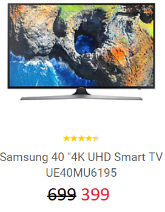
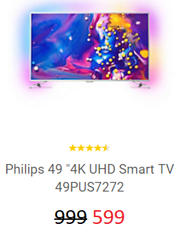
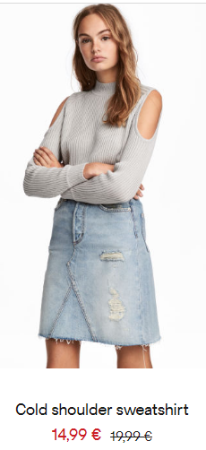
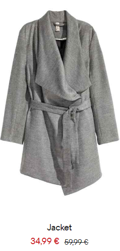

<!--
  Generated template for the PopularPage page.

  See http://ionicframework.com/docs/components/#navigation for more info on
  Ionic pages and navigation.
-->
<ion-header></ion-header>


<ion-content padding>

  
  <div class=promotedproducts>
    
    
    
  </div>

  
  <div class="promotedproducts">
    
    
    
  </div>

  
  <div class="promotedproducts">
    
    
    
  </div>

</ion-content>
